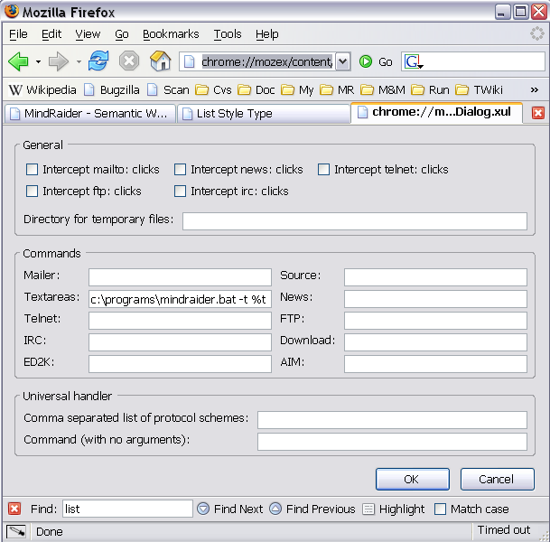
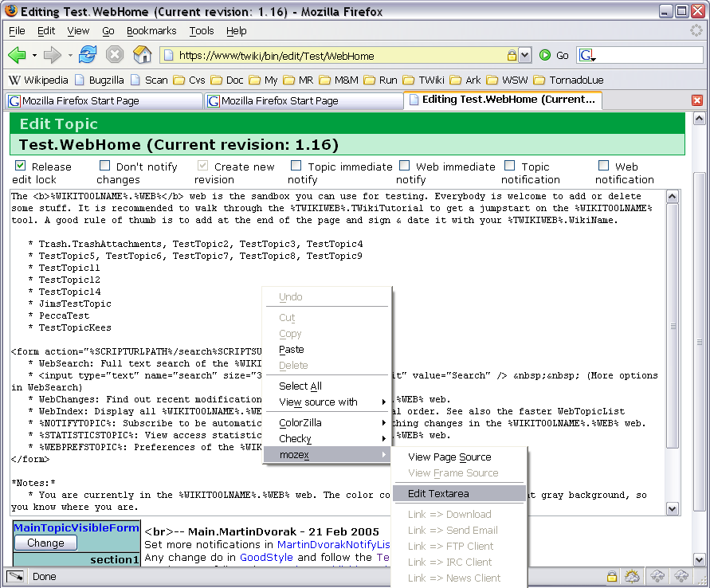
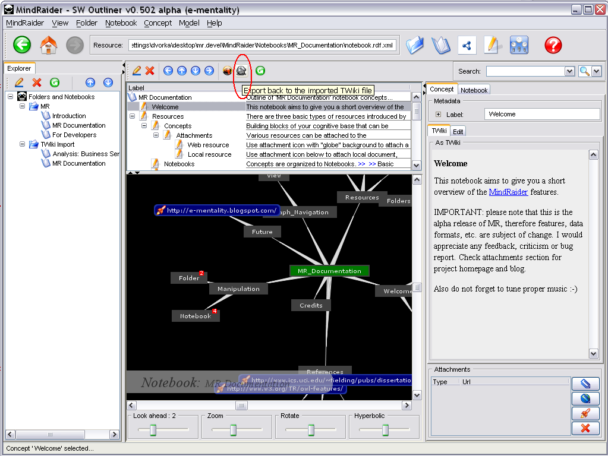
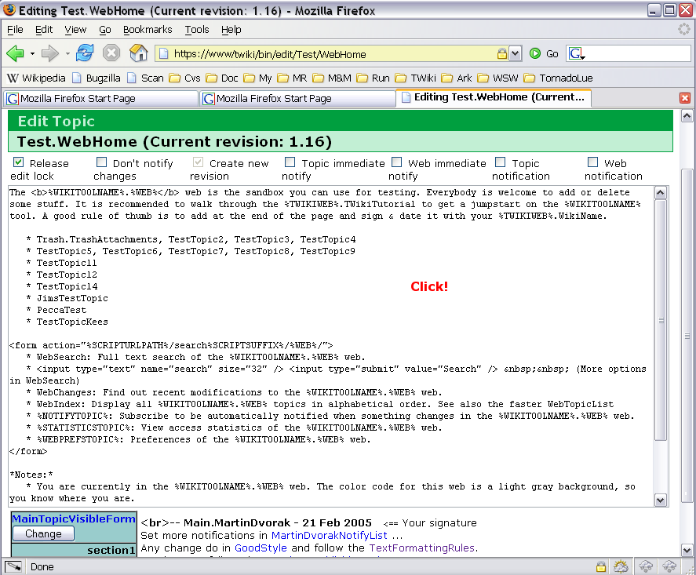

TWiki
| Table of Contents |
Introduction
If you would like to:
- edit and preview your TWiki topics off-line
- quickly refactor TWiki topics
- convert your topics to OPML
- search local replicas of topics using Lucene powered fulltext search
Mozex Installation
MindRaider 2 TWiki integration is based on
Mozilla/Firefox plugin called Mozex. So we will start with Mozex installation...
- Download Mozex from http://mozex.mozdev.org/
Configuring Mozex
If you are Mozilla user, configuration should be straightforward:
- Simply choose
Edit/Preferences/mozexfrom menu. - Then edit text areas editor to point to the MindRaider startup script like:
C:\MyPrograms\mindraider.bat -t %t
or if you are Linux hacker:
/opt/soft/mindraider/bin/mindraider.sh -t %t
Important: Since there is some bug in Mozex, path to the editor cann't contain space (likeC:\Program files\mindraider\bin\mindraider.bat). So if your MindRaider is installed in such directory, you may use auxiliary trigger like this - mindraider.bat and to store it e.g. inC:\MyPrograms\mindraider.bat. - Finally click
OK
If you prefer surfing with Firefox, then configuration of the Mozex is a little bit tricky. After the installation of Mozex (version 0.8), copy the following link to the location bar: chrome://mozex/content/mozexPrefDialog.xul
This is work around used to acquire Mozex configuration dialog. Now you can edit text areas editor as described above for Mozilla browser.

Editing TWiki Topics with MindRaider
1) Be sure that MindRaider is running.
2) Access the TWiki topic you want to edit, choose edit and then click right mouse over the text area. Choose
mozex from the context menu and Edit Textarea:

3) TWiki topic will be imported to the MindRaider (note that TWiki icon in the Notebook outline Toolbar is enabled in this case). You may edit/preview/refactor topic and its sections. After you are finished, click the TWiki icon:

Topic will be exported back to the Mozex's temp directory. You must click the text area content to force its refresh. Save the topic and that's it!


{kind=link}
{kind=link}
{kind=link}
{kind=link}